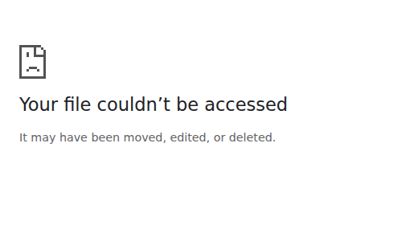
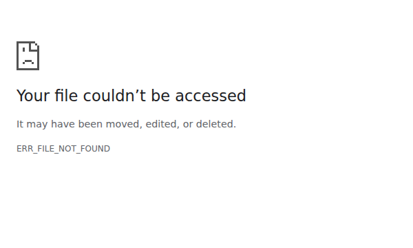
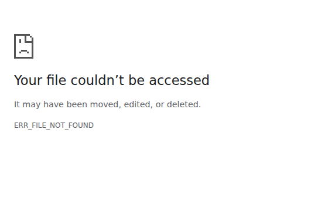

Foundation
16 web questions
- Use this tree to list the possible outcomes for two fair coin tosses.

- Use the tree to say how many outcomes are possible when two fair coins are tossed.
- Use the tree to write the probability of getting HH.
- Use the tree to write the probability of getting TT.
- Use the tree to write the probability of getting exactly one head.
- Use this tree for a coin toss and a fair die roll. How many outcomes are possible altogether?

- Use the tree to find the probability of getting H and 3.
- Use the tree to find the probability of getting T and an even number.
- A spinner has equal sectors labelled red and blue. It is spun twice. List the possible colour outcomes.
- A spinner has equal sectors labelled red and blue. It is spun twice. What is the probability of red then blue?
- A bag has one red and one blue counter. A counter is picked, replaced, then picked again. List the possible colour outcomes.
- A bag has one red and one blue counter. A counter is picked, replaced, then picked again. What is the probability of getting two reds?
- Fill in the blank: when two fair coins are tossed, the probability of at least one tail is $\frac{\square}{4}$.
- Fill in the blank: when a coin is tossed and a die is rolled, the probability of heads is $\frac{\square}{12}$.
- Which is more likely when two fair coins are tossed: two heads or exactly one head?
- A student says there are only three outcomes when two coins are tossed: heads, tails, and one of each. Are they correct?
Proficient
18 web questions
- Use this tree to list the full sample space for two fair coin tosses.
- Use the tree to find the probability of getting exactly two heads.
- Use the tree to find the probability of getting at least one head.
- Use this tree for a spinner labelled $1,2,3$ spun twice. List the outcomes where the total is $4$.
- Use the tree to find the probability that the total is $4$.

- A fair die is rolled twice. What is the probability of getting a 6 then an even number?
- A fair die is rolled twice. What is the probability of getting a 6 then an even number?
- A fair die is rolled twice. What is the probability that both numbers are odd?
- A bag has 2 red and 1 blue counter. A counter is picked, replaced, then picked again. What is the probability of red then blue?
- A bag has 2 red and 1 blue counter. A counter is picked, replaced, then picked again. What is the probability of two blues?
- A fair coin is tossed twice. What is the probability of getting the same result both times?
- A fair coin is tossed twice. What is the probability of getting different results?
- Fill in the blank: for two fair coin tosses, the probability of exactly one head is $\frac{\square}{4}$.
- Fill in the blank: for two fair die rolls, the probability of getting two odd numbers is $\frac{\square}{36}$.
- Which is greater: the probability of two heads in two coin tosses or the probability of a 6 then a 6 in two die rolls?
- Which is smaller: the probability of red then blue from a red-blue spinner spun twice or the probability of two reds?
- A student says the probability of H then 5 when a coin is tossed and a die is rolled is $\frac{1}{6}$. Are they correct?
- Explain in one short sentence what a branch on a tree diagram shows.
Excellence
19 web questions
- Use this tree for Questions 1--4.
- Is the probability of at least one head equal to $\frac{1}{2}$? Explain.
- Use the tree to find the probability of getting exactly two heads.
- Use the tree to find the probability of getting at least one tail.
- A student says HTH and THH are the same because both have two heads and one tail. Are they correct? Explain using tree paths.
- Use this partial two-dice tree to help find the probability that the total is $7$.
- Use the tree to find the probability that both numbers are greater than 4.
- A spinner has equal sectors labelled A, B, and C. It is spun twice. What is the probability of getting exactly one A?
- A spinner has equal sectors labelled 1, 2, 3, and 4. It is spun twice. What is the probability that both spins are even?
- A bag has 3 red and 2 blue counters. A counter is picked, replaced, then picked again. What is the probability of getting one red and one blue in any order?
- A bag has 3 red and 2 blue counters. A counter is picked, replaced, then picked again. What is the probability of getting two counters of the same colour?
- Which is greater: the probability of exactly one head in three coin tosses or the probability of a total of 7 in two die rolls? Show enough working to justify.
- Which is smaller: the probability of two blues from a bag with 3 red and 2 blue counters, with replacement, or the probability of two heads in two coin tosses? Explain.
- Fill in the blank: when a fair coin is tossed three times, the probability of HHH is $\frac{\square}{8}$.
- Fill in the blank: when a fair die is rolled twice, the probability of getting doubles is $\frac{\square}{36}$.
- Which does not belong: outcome, branch, sample space, perimeter? Explain.
- A game pays out on exactly two heads from three fair coin tosses. Is this more or less likely than getting exactly one head? Explain.
- A coin is tossed and a die is rolled. Explain why the probability of H and an odd number is found by counting 3 favourable outcomes out of 12.
- Explain why a full tree diagram helps avoid missing combined outcomes.